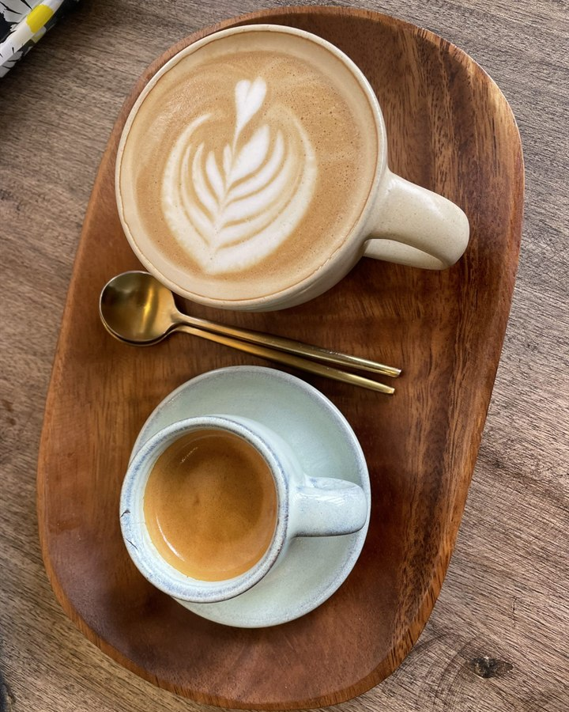
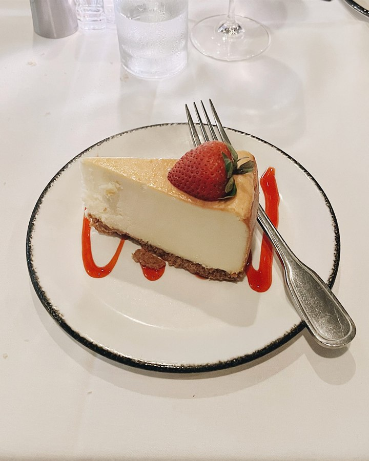

便りのように、ひとこと
新潟県加茂市黒水より、ひとことお便りです。
旧七谷郵便局舎は、木造2階建てで、加茂市指定文化財になっています。かつて便りが行き交ったこの場所は、いまはカフェとして開いています。所々に郵便局舎の名残がある、というお声もあります。
1階にも2階にも、客席があります。ゆったりとしたBGMが流れ、居心地が良い、というお声があります。まわりは木々の緑です。お一人でも、デートでも、ご家族でも、という声も寄せられています。

サンプル写真
サンプル写真お客様の声には、ドリップコーヒー(550円)が出てきます。苦味・酸味が控えめで飲みやすく、たっぷりの量、というお声です。ケーキやプリンも登場します。品揃えは変わることがあります。最新の内容は、Instagramでご確認ください。
kafune